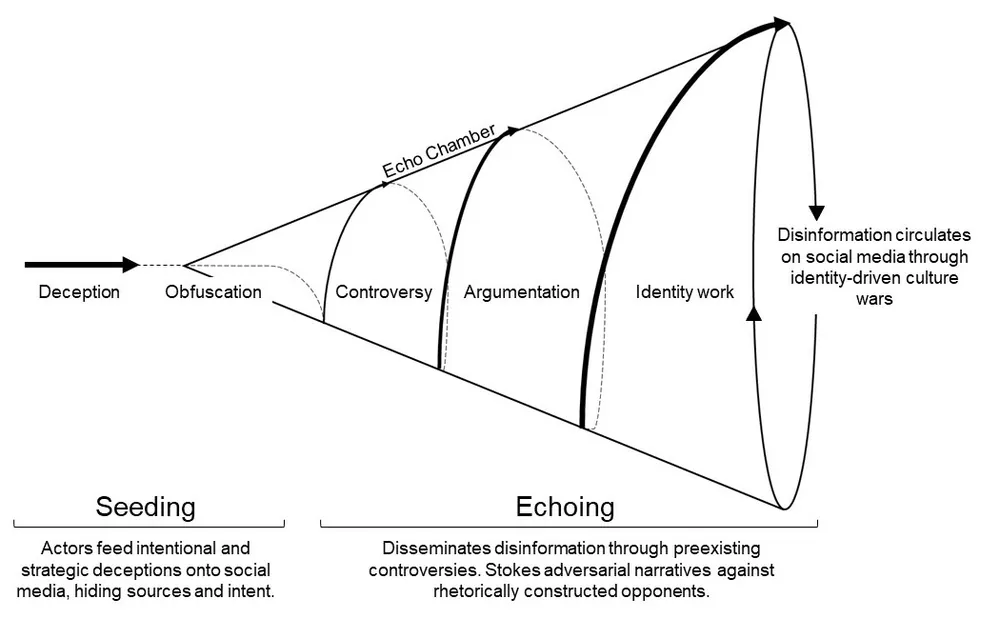

The claim
The concern is old — Sunstein described 'echo chambers' and 'information cocoons' before the smartphone — but it became urgent with algorithmic feeds. The mechanism proposed is selection plus amplification: users choose congenial content, and ranking systems learn to supply more of it because it holds attention.
The predicted consequences are attitude polarisation, affective polarisation (disliking the other side), and false beliefs, with the strongest effects at the extremes.
What the experiments found
In 2023 four papers published in Science and Nature reported large randomised experiments on Facebook and Instagram during the 2020 US election. Turning off the algorithmic feed in favour of a chronological one reduced exposure to like-minded content and to political news — but did not reduce attitude polarisation, and slightly reduced political knowledge.
A companion experiment that reduced exposure to like-minded sources found no measurable effect on polarisation. Another that altered the content mix found small changes in attitudes that faded within weeks.
Earlier observational work pointed the other way: Bail and colleagues found that exposing Democrats to a stream of Republican content on Twitter increased rather than decreased hostility. Both findings can be true — the effect depends on whether the exposure is to the other side's arguments or to its most provoking material.
Supported: algorithmic feeds do change what people see, and political content on them is skewed; the platforms' own data confirm the mechanism.
Not supported: the simple causal story that the feed is what polarises people. The experiments found effects on exposure and much weaker effects on attitudes.
The limit: these studies ran for weeks inside a system that had shaped its users for years. An experiment cannot undo a decade of accumulated sorting, and null results in a short window are not evidence that the long-run effect is zero.
The archive labels this live debate: the mechanism is documented, the magnitude is contested, and the honest position is that the field changed its mind about how much of the crisis the algorithm explains.
Why it is in the archive
Because it is a rare case where a widely believed media effect was tested at scale by the platforms themselves, and the result was more complicated than either campaigners or the companies claimed.
Related: the dead internet theory, and algorithmic fairness.
Sources for this page
- Wikipedia, “Echo chamber (media)” — theory and evidenceen.wikipedia.org
- Guess et al. (2023), Science — feed algorithms and the 2020 electiondoi.org
- Nyhan et al. (2023), Nature — like-minded sources are prevalent but not polarisingdoi.org
- Bail et al. (2018), PNAS — exposure to opposing views can increase polarisationdoi.org
Open resources on this topic
- BookDigital Echo Chambers: The Amplification of Identity Politics in Social Media Platforms — Indranil Roy and and Mugdha Sengupta · 2023 (Internet Archive, free to read)
- BookExplaining the emergence of echo chambers on social media: the role of ideology and extremism — Jonathan Bright · 2016 (Internet Archive, free to read)
- BookEcho chambers — Himmel, Richard · 1982 (Internet Archive, free to read)
- PapersOpen-access articles: DOAJ · PubMed Central · Internet Archive Scholar
- BooksPublic-domain and borrowable copies: Open Library · Project Gutenberg · Google Books
More images

Disinformation and echo chambers
Diaz Ruiz, C. and Nilsson, T.; MexFin · CC BY-SA 4.0 · Commons- Echoes from Old Calcutta - p106a
Henry Elmsley Busteed · Public domain · Commons


Cite this page
Momin, S. (2026). Echo Chambers. The Larger World Archive. https://drsamonline.github.io/LARGE_GLOBE/echo-chambers.htmlMomin, Sohil. “Echo Chambers.” The Larger World Archive, 2026, https://drsamonline.github.io/LARGE_GLOBE/echo-chambers.html.Momin, Sohil. “Echo Chambers.” The Larger World Archive, 2026. https://drsamonline.github.io/LARGE_GLOBE/echo-chambers.html.@misc{echo2026echo,
author = {Momin, Sohil},
title = {Echo Chambers},
year = {2026},
howpublished = {The Larger World Archive},
url = {https://drsamonline.github.io/LARGE_GLOBE/echo-chambers.html},
note = {Last reviewed 20 November 2026}
}Last reviewed 20 November 2026 · Corrections policy · this page is not peer reviewed